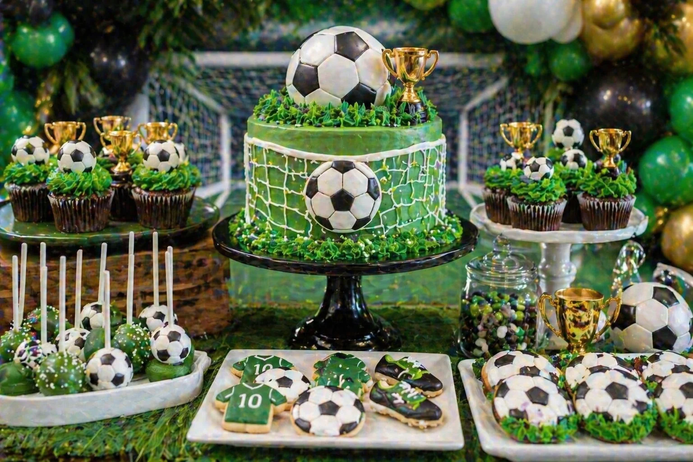
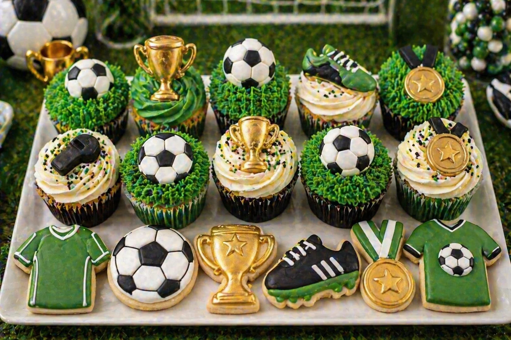

A football party is a brilliant theme for children who love the game — whether they play for a local team, watch every match or simply enjoy kicking a ball around with friends. With green pitch styling, football balloons, trophy details, grass-effect cupcakes and a statement cake, the dessert table can become the main feature of the celebration.
At Little Moment Studio, we create balloon displays and styled celebration setups for birthdays across Kent and the surrounding areas. A football theme works especially well because it can be styled in lots of ways — classic green, black and white; more premium with gold trophy details; or personalised with your child’s favourite team colours, without needing to use official club logos.
Football Party Colour Palettes
The colour palette is the foundation of the whole setup. For most football parties, three to five colours repeated across the balloons, cake, cupcakes and props gives the most polished result.
| Style | Colour Palette |
|---|---|
| Classic football | Pitch green, black, white, silver |
| Trophy football | Green, black, white, gold |
| Luxury football | Emerald green, black, champagne, white |
| First birthday football | Soft green, white, gold, cream |
| Team-colour accent | Green, white, black plus one team colour |
| Bold birthday football | Green, black, gold, silver |
| Neutral football | Sage green, cream, taupe, white |
Idea 1: Classic Football Dessert Table
The classic football table is the clearest and most versatile version of this theme. Green, black and white with football details and trophy accents — it instantly reads as football to every guest and works well in any venue, from home celebrations to sports halls.
The key elements are a green balloon garland with black and white accents, a football pitch or football-print cake, grass-effect cupcakes and a goal net backdrop or green wall. A few gold trophy details lift the whole setup without changing the colour story.
Balloon Combinations That Work
Green, black, white and gold is the most consistent football palette. For a cleaner, more premium look, use football-print balloons sparingly — one or two alongside solid colours looks far more polished than a garland that is mostly football-print.
Idea 2: Cake & Cupcake Display
A well-styled cake and cupcake display makes the football theme feel complete on the dessert table. The cupcakes repeat the pitch, trophy and football details from the cake, so every element feels connected rather than placed independently.

| Cupcake Style | Best For |
|---|---|
| Grass-effect cupcakes | Pitch-style dessert table — most popular football cupcake |
| Football topper cupcakes | Classic football theme |
| Trophy cupcakes | Winner’s table or match-day feel |
| Medal cupcakes | Sports party detail |
| Jersey topper cupcakes | Personalised birthday table |
| Green swirl cupcakes | Simple, colour-matched table fillers |
| Black and white cupcakes | Strong football colour matching |
For grass-effect buttercream, a Wilton 233 grass tip gives the most realistic pitch look. For swirls and rosettes, Wilton 1M and 2D work well. See our piping tips guide for more detail. For general cupcake inspiration, see birthday cupcake ideas.
Idea 3: Cupcake & Treat Tray
A cupcake and treat tray works well if you want a smaller sweet display alongside the main cake, or a close-up spread that gives guests a clearer look at the themed designs. It is also the most practical idea to share with a cake maker as a brief — a styled tray shows the specific football details you are looking for.

A good football treat tray might include grass-effect cupcakes, football cupcakes, trophy cake pops, football cookies, jersey cookies and boot cookies, all displayed on a black or dark tray with a few artificial grass details alongside. Keep the colours to green, black, white and gold for a tight, coordinated look.
More Football Party Ideas
Trophy Football Table
A trophy-focused setup gives the theme a winner’s celebration feel — ideal for children who play in a team or love the sense of match-day occasion. Gold trophy props, gold sweet jars and a few chrome gold balloons as accents can elevate a standard football table into something that feels like a cup final celebration. Keep gold as an accent rather than the main colour so the pitch greens and blacks remain dominant.
First Birthday Football
A football theme can be softened significantly for a first birthday. Swap the stadium-style palette for soft green, cream, white and gold — it keeps the football identity but feels much gentler. A number one cake topper, soft green balloons, cream cupcakes with mini football details and a neutral backdrop all work beautifully for a younger child. See our first birthday balloon ideas for more on softening bold themes.
Team Colour Football Table
You can add your child’s favourite team colours to the palette without using official logos or badges. A base of green, white and black with one or two accent colours — red, blue, yellow — makes the setup feel personal while keeping it flexible and easy to style.
| Accent | Full Palette |
|---|---|
| Red accent | Green, white, black, red |
| Blue accent | Green, white, black, blue |
| Yellow accent | Green, white, black, yellow |
| Gold accent | Green, black, white, gold |
Football Balloon Ideas
The balloon display creates most of the visual impact around the dessert table. A green balloon garland with black, white and gold accents is the most consistent starting point. Football-print balloons work best used sparingly — two or three amongst solid colours looks far more polished than an entirely football-print garland.
| Style | Balloon Colours |
|---|---|
| Classic football | Green, black, white |
| Trophy football | Green, black, white, gold |
| First birthday football | Soft green, cream, white, gold |
| Luxury football | Emerald, black, champagne, white |
| Team-colour football | Green, white, black plus one colour |
| Stadium style | Green, black, white, silver |
Matching Balloons, Cake and Cupcakes
The most polished football tables repeat the same colours across balloons, cake, cupcakes and props. The cake does not need to match the balloons exactly — it just needs to feel like it belongs to the same party.
| Balloon Palette | Cake & Cupcake Idea |
|---|---|
| Green, black, white | Football pitch cake, grass cupcakes, football cookies |
| Green, black, gold | Trophy cake, gold cake pops, football cupcakes |
| Soft green, cream, gold | First birthday football cake, soft cupcakes |
| Green, white, blue | Blue accent football cake and matching cupcakes |
| Green, white, red | Red accent football cake and cookie tray |
For more on coordinating all the colours across the table, see how to match cupcakes with your balloon display and our balloon colour palette guide.
Cookies, Cake Pops & Treats
Cookies and cake pops are among the easiest ways to make a football table feel detailed and themed without everything needing to be highly decorated.
| Treat | Football Ideas |
|---|---|
| Cookies | Footballs, jerseys, boots, medals, trophies, goal nets, number cookies |
| Cake pops | Football pops, trophy pops, medal pops, green pitch pops |
| Brownies | Chocolate football bites or match-day brownie squares |
| Sweet jars | Green, black, white or gold sweets — colour-match to the palette |
| Popcorn cups | Match-day snack cups with football-print or team colours |
A few strong football details — grass cupcakes, trophy cake pops, jersey cookies — can carry the whole table. You do not need every single element to be themed.
Setting Up the Table
For a practical guide to arranging cake stands, backdrops, treats and props, see how to style a dessert table for a children’s party. Good football table props include trophy and medal details, artificial grass as a table runner, black cake stands and goal net or stadium-style backdrop elements. Use two or three strong football details and repeat them — this almost always looks better than trying to include every element at once.
For help planning the balloon garland that frames the table, we would love to hear from you. We can also recommend a trusted local cake maker if you would like cupcakes or a cake to complete the display.
Planning a Football Party in Kent?
Little Moment Studio creates balloon displays and styled celebration setups for birthdays across Sittingbourne and Kent. We can help with the green balloon garland, backdrop and overall party look — and we’re happy to recommend a trusted local cake maker too.